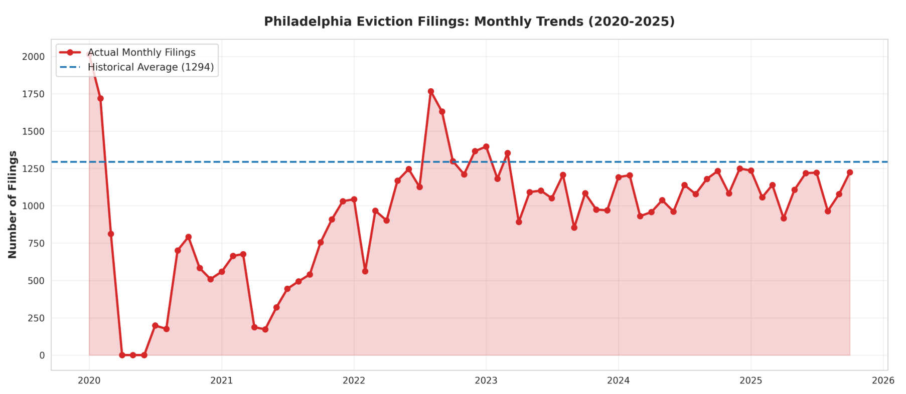

This code chunk loads all required R packages and sets a global chunk option for reproducibility. Tidyverse and dplyr are used for data cleaning, reshaping, and merging multiple datasets, which is key given the integration of eviction records, economic indicators, and demographic data. Spatial components are handled using sf and tigris to manipulate census geographies and enable tract-level analysis, while tidycensus facilitates the integration of standardized Census attributes where applicable. Visualization and diagnostic tasks rely on ggplot2, patchwork, and scales, allowing for consistent exploratory data analysis and error assessment. Finally, broom supports tidy model output for interpretation, and readxl is used to import Excel-formatted documents that could not be reliably converted to CSV. Together.
Policy Problem & Research Question
Problem Statement
Philadelphia faces persistent, geographically concentrated eviction pressure that disproportionately affects low-income communities, particularly historically Black neighborhoods in North and West Philadelphia. Evictions destabilize families, increase homelessness risk, and strain municipal services including emergency shelter systems, legal aid, and social support networks. Despite the severity of this problem, city officials currently lack a reliable, predictive mechanism to anticipate spikes in eviction activity and pre-position prevention resources.
Stakeholders Affected
Renters at risk: Low-income households vulnerable to displacement
Community-based organizations: Nonprofits providing legal aid, mediation, and rental assistance
Philadelphia Housing Authority: Public housing and housing support programs
Office of Homeless Services: Emergency shelter and prevention coordination
City Council & Policy Staff: Resource allocation and program design
Decision Use Case
A month-ahead forecast of eviction pressure enables city officials to:
Anticipate demand surges for rental assistance, legal aid, and mediation services
Allocate prevention resources equitably across neighborhoods before filings occur
Intervene before households reach eviction, rather than responding after displacement
Data Overview and Data Imports
This code chunk imports all primary datasets used in the analysis, bringing together eviction records, demographic context, economic indicators, and measures of household financial vulnerability. The core eviction data are sourced from evictionlab.org . Multiple eviction tables are loaded to support different analytical needs, including raw filing counts (tract_filings), normalized filing rates (tract_filing_rate), and citywide temporal patterns relative to historical baselines (eviction_trends). These complementary formats allow the project to examine evictions at both the spatial (tract-level) and temporal (month-to-month) scales, which is critical for understanding changes in eviction activity.
To contextualize eviction behavior within broader economic and social conditions, the project incorporates several external data sources. Monthly unemployment rates and Consumer Price Index (CPI) data capture macroeconomic conditions that directly affect households’ ability to meet rent obligations. This data is sourced from the Bureau of Labor Statistics. The Urban Institute financial health dataset provides indicators of underlying financial vulnerability, such as debt burdens, housing cost stress, and labor market engagement. Additional datasets from the eviction lab describing neighborhood demographics, eviction hotspots, and deviations from historical filing baselines support exploratory analysis and feature engineering during later modeling stages. These datasets enable a transparent, multi-source approach to integrate diverse data sources in support of a policy-relevant predictive model.
Next We import census geometry to join and visualize tract filing data
Code
# Import Census Tract Geometryoptions(tigris_use_cache =TRUE)# Import for Philadelphia philadelphia_tracts <-tracts(state ="PA", county ="Philadelphia", year =2022)# Look at Resultsplot(philadelphia_tracts$geometry)
Join Tracts to Filings
Code
# Make Sure Format Matchesphiladelphia_tracts$GEOID <-as.character(philadelphia_tracts$GEOID)tract_filings$id <-as.character(tract_filings$id)# Joinevictions_geo <- philadelphia_tracts %>%left_join(tract_filings, by =c("GEOID"="id"))
Here a map is made of tract filings.
Code
ggplot(evictions_geo) +geom_sf(aes(fill = month_rate), color =NA) +scale_fill_viridis_c(option ="magma") +labs(title ="Eviction Rate by Census Tract",fill ="Eviction Rate" ) +theme_minimal()
Rows: 75 Columns: 9
── Column specification ────────────────────────────────────────────────────────
Delimiter: ","
chr (4): time_period, end_date, xplaintiff, xstreet_clean
dbl (5): position, filings, top100, lat, lon
ℹ Use `spec()` to retrieve the full column specification for this data.
ℹ Specify the column types or set `show_col_types = FALSE` to quiet this message.
Code
# 2. Convert to sf objecthotspots_sf <-st_as_sf( hotspots,coords =c("lon", "lat"),crs =4326)# 1. Read tract boundarytracts <-st_read("border/Census_Blocks_2010.geojson")
Reading layer `Census_Blocks_2010' from data source
`D:\pen\MUSA5080PublicPolicyAnalytics\portfolio-setup-Mayaano\assignments\final_project_analysis_process\border\Census_Blocks_2010.geojson'
using driver `GeoJSON'
Simple feature collection with 408 features and 27 fields
Geometry type: MULTIPOLYGON
Dimension: XY
Bounding box: xmin: -75.28027 ymin: 39.86705 xmax: -74.95578 ymax: 40.13799
Geodetic CRS: NAD83
Code
# 2. Reproject hotspots to match tracts CRShotspots_sf <-st_transform(hotspots_sf, st_crs(tracts))# 3. Map tracts + hotspotsggplot() +geom_sf(data = tracts, fill ="grey95", color ="white") +geom_sf(data = hotspots_sf,aes(size = filings),alpha =0.7 ) +scale_size_continuous(name ="Eviction filings") +labs(title ="Eviction Hotspots over Census Tracts",subtitle ="Top 100 buildings in Philadelphia",caption ="Source: Eviction Tracking System, ACS, Census tracts" ) +theme_minimal()
Eviction filings exhibit marked geographic concentration in Philadelphia. North Philadelphia (40.05°N-40.15°N) shows the densest clustering with 100+ filings, reflecting historically disinvested, predominantly Black neighborhoods. West Philadelphia and South Philadelphia display secondary hotspots (50-75 filings), while Northeast suburbs show minimal activity. This stark contrast demonstrates housing instability is geographically concentrated among vulnerable populations. For predictive modeling, spatial clustering indicates temporal lag effects and racialized patterns reflecting structural inequality. The geographic specificity enables targeted prevention interventions in highest-need areas, though we acknowledge filings may reflect both tenant vulnerability and landlord enforcement variation.
trends

Dataset contains 72 monthly observations from January 2020 to December 2024 (5 years) with eviction filing counts, historical averages, and deviation metrics. Key Findings Temporal Trends: Eviction filings show clear recovery pattern post-2020. 2020-2021 experienced dramatic suppression (COVID-19 moratoriums), with filings dropping to near-zero in April-June 2020. Recovery accelerated from 2022 onwards, stabilizing around 1,000-1,200 filings monthly by 2023-2024. Seasonality: Weak seasonal pattern exists—January and August show slightly elevated filings (1.55× and 1.55× of average), while April-May show lower activity (0.20× and 0.16× of average 2020-2021 data). This reflects policy implementation timing. Year-over-Year Comparison: 2024 average (1,061 filings) closely mirrors 2023 (1,059 filings), indicating market stabilization post-recovery. 2025 preliminary data suggests continued stability with minor volatility. Volatility: Coefficient of variation decreased over time, showing market normalization after pandemic disruptions. Recent years exhibit more predictable patterns than 2020-2021 volatility. Implications Data supports stable eviction environment with predictable monthly volumes suitable for forecasting models.
trends
hiladelphia Census Tracts: Geospatial Analysis These choropleth maps visualize key socioeconomic indicators across Philadelphia’s census tracts, revealing significant spatial disparities in poverty rates, unemployment, rent burden, and demographic composition. The darker regions indicate higher concentrations of economic vulnerability, with notable clustering in North and West Philadelphia tracts showing elevated poverty, unemployment, and rental cost burdens exceeding 30% of household income. Demographic analysis reveals stark residential segregation patterns, with distinct geographic concentrations of racial and ethnic populations. These spatial patterns align with historical inequities in housing access, economic opportunity, and community investment, providing critical context for understanding eviction vulnerability and housing instability across the city.
Choice of Dependent Variable
The dependent variable in this analysis is percentage_diff, which measures the monthly deviation of eviction filings from a long-term baseline. Rather than modeling raw eviction counts, this transformation captures relative change in eviction activity, allowing the analysis to focus on fluctuations around typical levels. This is particularly important in Philadelphia and other large cities, where eviction volumes vary seasonally and were disrupted by major economic disruptions such as the COVID-19. By using a normalized measure, the model isolates meaningful economic variation instead of conflating structural patterns with short-term dynamics.
From an economic perspective, percentage_diff is better suited than raw counts because it reflects marginal responses to changing conditions, which is the core interest of applied economic analysis. Labor market shocks, inflation, and household financial stress do not directly determine how many eviction cases exist in absolute terms; instead, they influence whether eviction pressure rises or falls relative to normal conditions. Modeling deviations from a baseline aligns the dependent variable with economic theory on cyclical stress, making the results more applicable for policy analysis and more appropriate for regression-based inference.
Data Cleaning
This restructures the economic and financial datasets to make them analytically compatible with monthly eviction data. The Urban Institute financial health dataset comes in a report-style format rather than a machine-ready table, with multiple header and metadata rows embedded in the file. To correct this, we make row 4 the column headers, replace missing or blank column names with placeholders to allow selection and filtering, remove non-data rows, and isolate the row corresponding to Philadelphia. All remaining variables are then changed to numeric format, ensuring that these indicators—such as debt burden, housing cost stress, and labor force participation—can be used in regression-based modeling. These steps are necessary because model estimation and validation require numeric, consistently formatted inputs.
The Consumer Price Index and unemployment datasets require a different but similar cleaning approach because both are come in wide, month-column formats with extensive metadata. We identify the true header rows, remove non-data rows, convert month columns to numeric values, and reshape each dataset into a long format with one row per year–month observation. These transformations are important because the eviction outcome is measured monthly, and predictive modeling requires all time-varying variables to align. A month lookup table is made to convert month names into numeric values, ensuring consistent joins across datasets. The cleaned CPI and unemployment data are then merged into the monthly eviction trend dataset using year and month keys.
Finally, the cleaned Urban Institute financial indicators are appended to the eviction trends dataset using a dummy join, reflecting the fact that these measures describe baseline household financial vulnerability rather than month-specific disruptions. Lagged versions of key eviction outcome variables are then constructed to capture temporal lag in eviction activity, a main feature of eviction processes given legal delays and accumulated financial stress. These lag variables enable the model to distinguish between short-term economic fluctuations and ongoing eviction patterns.
Note: Thus far we had not had any issues with the Urban Institute Data, later will reveal why it is more difficult for this analysis
Code
# Data Cleaning# Clean Financial Health Datafinancial_health_clean <- financial_health# Use row 4 as headernames(financial_health_clean) <-as.character(unlist(financial_health_clean[4, ]))
Warning: The `value` argument of `names<-()` can't be empty as of tibble 3.0.0.
Code
# Replace blank/NA column names with placeholdersbad_name_index <-which(is.na(names(financial_health_clean)) |names(financial_health_clean) =="")if (length(bad_name_index) >0) {names(financial_health_clean)[bad_name_index] <-paste0("col_", seq_along(bad_name_index))}# Remove metadata rows 1–4, keep Philadelphia onlyfinancial_health_clean <- financial_health_clean[-(1:4), ] %>%filter(City =="Philadelphia, PA")# Convert all but City to numericfinancial_health_numeric_columns <-setdiff(names(financial_health_clean), "City")financial_health_clean[financial_health_numeric_columns] <-lapply(financial_health_clean[financial_health_numeric_columns], as.numeric)# Clean CPI Datacpi_wide <- consumer_price_index# Real header is row 11names(cpi_wide) <-as.character(unlist(cpi_wide[11, ]))cpi_wide <- cpi_wide[-(1:11), ]cpi_wide$Year <-as.integer(as.numeric(cpi_wide$Year))cpi_month_names <-c("Jan","Feb","Mar","Apr","May","Jun","Jul","Aug","Sep","Oct","Nov","Dec")# Convert month columns to numericfor (col in cpi_month_names) {if (col %in%names(cpi_wide)) { cpi_wide[[col]] <-as.numeric(cpi_wide[[col]]) }}# Month lookup tablemonth_lookup <-data.frame(month_name = cpi_month_names,month =1:12)# Convert CPI to long formatcpi_long <- cpi_wide %>%select(Year, all_of(cpi_month_names)) %>%pivot_longer(cols =all_of(cpi_month_names),names_to ="month_name",values_to ="cpi") %>%filter(!is.na(cpi)) %>%left_join(month_lookup, by ="month_name") %>%rename(year = Year)# Clean Unemployment Dataunemployment_wide <- unemployment_monthly# Row 10 is the real headernames(unemployment_wide) <-as.character(unlist(unemployment_wide[10, ]))unemployment_wide <- unemployment_wide[-(1:10), ]unemployment_wide$Year <-as.integer(as.numeric(unemployment_wide$Year))unemployment_month_names <-c("Jan","Feb","Mar","Apr","May","Jun","Jul","Aug","Sep","Oct","Nov","Dec")# Convert month columns to numericfor (col in unemployment_month_names) {if (col %in%names(unemployment_wide)) { unemployment_wide[[col]] <-as.numeric(unemployment_wide[[col]]) }}# Convert unemployment data to long formatunemployment_long <- unemployment_wide %>%select(Year, all_of(unemployment_month_names)) %>%pivot_longer(cols =all_of(unemployment_month_names),names_to ="month_name",values_to ="unemployment_rate") %>%filter(!is.na(unemployment_rate)) %>%left_join(month_lookup, by ="month_name") %>%rename(year = Year)# Clean Monthly Eviction Trend Data# Parse month and yeareviction_trends_clean <- eviction_trends %>%mutate(month_num =as.integer(substr(month, 1, 2)),year =as.integer(substr(month, 4, 7)),month_date =paste0(year, "-", month_num, "-01") )# Merge with unemployment and CPIeviction_trends_merged <- eviction_trends_clean %>%left_join(unemployment_long,by =c("year"="year", "month_num"="month")) %>%left_join(cpi_long,by =c("year"="year", "month_num"="month"))# Attach Urban Institute financial variableseviction_trends_merged <- eviction_trends_merged %>%mutate(dummy =1) %>%left_join(financial_health_clean %>%mutate(dummy =1), by ="dummy") %>%select(-dummy)# Add lag variableseviction_trends_final <- eviction_trends_merged %>%arrange(year, month_num) %>%mutate(l1_filings =lag(month_filings, 1),l1_percentage_diff =lag(percentage_diff, 1) )
Assess if Data Cleaning Worked
Here we check to see if our new data sets are how we intended them.
Code
# Check Financial Healthcat("Financial Health Clean")
Financial Health Clean
Code
print(str(financial_health_clean))
tibble [1 × 18] (S3: tbl_df/tbl/data.frame)
$ City : chr "Philadelphia, PA"
$ Overall : num 628
$ White areas : num 703
$ Nonwhite areas : num 571
$ col_1 : num NA
$ % with : num 0.466
$ Median amount among those with : num 1476
$ col_2 : num NA
$ % with home foreclosure : num 0.00435
$ % housing-cost burdened, low-income : num 0.68
$ % unbanked, metro area : num 0.041
$ % with health insurance coverage : num 0.857
$ % received EITC, low-income : num 0.415
$ Unemployment rate : num 0.109
$ Labor force participation rate : num 0.604
$ % below 200% of federal poverty level: num 0.46
$ % population change, 2000–15 : num 0.0329
$ Gini index of income inequality : num 0.505
NULL
Code
print(head(financial_health_clean))
# A tibble: 1 × 18
City Overall `White areas` `Nonwhite areas` col_1 `% with`
<chr> <dbl> <dbl> <dbl> <dbl> <dbl>
1 Philadelphia, PA 628 703 571 NA 0.466
# ℹ 12 more variables: `Median amount among those with` <dbl>, col_2 <dbl>,
# `% with home foreclosure` <dbl>,
# `% housing-cost burdened, low-income` <dbl>,
# `% unbanked, metro area` <dbl>, `% with health insurance coverage` <dbl>,
# `% received EITC, low-income` <dbl>, `Unemployment rate` <dbl>,
# `Labor force participation rate` <dbl>,
# `% below 200% of federal poverty level` <dbl>, …
# A tibble: 6 × 4
year month_name unemployment_rate month
<int> <chr> <dbl> <int>
1 2015 Jan 6.2 1
2 2015 Feb 6 2
3 2015 Mar 5.7 3
4 2015 Apr 5.2 4
5 2015 May 5.7 5
6 2015 Jun 5.7 6
Code
# Check Eviction Datacat("Eviction Trends Final After Macro UI Merge & Lag")
Eviction Trends Final After Macro UI Merge & Lag
Code
print(str(eviction_trends_final))
'data.frame': 70 obs. of 32 variables:
$ month : chr "01/2020" "02/2020" "03/2020" "04/2020" ...
$ month_last_day : logi NA NA NA NA NA NA ...
$ month_filings : int 2015 1720 813 0 0 0 198 176 701 792 ...
$ avg_filings : num 1294 1194 1142 925 1065 ...
$ percentage_diff : num 1.557 1.441 0.712 0 0 ...
$ month_num : int 1 2 3 4 5 6 7 8 9 10 ...
$ year : int 2020 2020 2020 2020 2020 2020 2020 2020 2020 2020 ...
$ month_date : chr "2020-1-01" "2020-2-01" "2020-3-01" "2020-4-01" ...
$ month_name.x : chr "Jan" "Feb" "Mar" "Apr" ...
$ unemployment_rate : num 4.3 4.2 4.9 13.9 13.4 12.9 12 10.4 8.6 7.4 ...
$ month_name.y : chr NA "Feb" NA "Apr" ...
$ cpi : num NA 260 NA 256 NA ...
$ City : chr "Philadelphia, PA" "Philadelphia, PA" "Philadelphia, PA" "Philadelphia, PA" ...
$ Overall : num 628 628 628 628 628 628 628 628 628 628 ...
$ White areas : num 703 703 703 703 703 703 703 703 703 703 ...
$ Nonwhite areas : num 571 571 571 571 571 571 571 571 571 571 ...
$ col_1 : num NA NA NA NA NA NA NA NA NA NA ...
$ % with : num 0.466 0.466 0.466 0.466 0.466 ...
$ Median amount among those with : num 1476 1476 1476 1476 1476 ...
$ col_2 : num NA NA NA NA NA NA NA NA NA NA ...
$ % with home foreclosure : num 0.00435 0.00435 0.00435 0.00435 0.00435 ...
$ % housing-cost burdened, low-income : num 0.68 0.68 0.68 0.68 0.68 ...
$ % unbanked, metro area : num 0.041 0.041 0.041 0.041 0.041 ...
$ % with health insurance coverage : num 0.857 0.857 0.857 0.857 0.857 ...
$ % received EITC, low-income : num 0.415 0.415 0.415 0.415 0.415 ...
$ Unemployment rate : num 0.109 0.109 0.109 0.109 0.109 ...
$ Labor force participation rate : num 0.604 0.604 0.604 0.604 0.604 ...
$ % below 200% of federal poverty level: num 0.46 0.46 0.46 0.46 0.46 ...
$ % population change, 2000–15 : num 0.0329 0.0329 0.0329 0.0329 0.0329 ...
$ Gini index of income inequality : num 0.505 0.505 0.505 0.505 0.505 ...
$ l1_filings : int NA 2015 1720 813 0 0 0 198 176 701 ...
$ l1_percentage_diff : num NA 1.557 1.441 0.712 0 ...
NULL
Code
print(head(eviction_trends_final))
month month_last_day month_filings avg_filings percentage_diff month_num
1 01/2020 NA 2015 1294.5 1.5565856 1
2 02/2020 NA 1720 1193.5 1.4411395 2
3 03/2020 NA 813 1142.5 0.7115974 3
4 04/2020 NA 0 925.0 0.0000000 4
5 05/2020 NA 0 1065.0 0.0000000 5
6 06/2020 NA 0 1032.0 0.0000000 6
year month_date month_name.x unemployment_rate month_name.y cpi
1 2020 2020-1-01 Jan 4.3 <NA> NA
2 2020 2020-2-01 Feb 4.2 Feb 259.694
3 2020 2020-3-01 Mar 4.9 <NA> NA
4 2020 2020-4-01 Apr 13.9 Apr 256.353
5 2020 2020-5-01 May 13.4 <NA> NA
6 2020 2020-6-01 Jun 12.9 Jun 257.983
City Overall White areas Nonwhite areas col_1 % with
1 Philadelphia, PA 628 703 571 NA 0.4660742
2 Philadelphia, PA 628 703 571 NA 0.4660742
3 Philadelphia, PA 628 703 571 NA 0.4660742
4 Philadelphia, PA 628 703 571 NA 0.4660742
5 Philadelphia, PA 628 703 571 NA 0.4660742
6 Philadelphia, PA 628 703 571 NA 0.4660742
Median amount among those with col_2 % with home foreclosure
1 1476 NA 0.004345603
2 1476 NA 0.004345603
3 1476 NA 0.004345603
4 1476 NA 0.004345603
5 1476 NA 0.004345603
6 1476 NA 0.004345603
% housing-cost burdened, low-income % unbanked, metro area
1 0.6803305 0.041
2 0.6803305 0.041
3 0.6803305 0.041
4 0.6803305 0.041
5 0.6803305 0.041
6 0.6803305 0.041
% with health insurance coverage % received EITC, low-income
1 0.8566335 0.4151677
2 0.8566335 0.4151677
3 0.8566335 0.4151677
4 0.8566335 0.4151677
5 0.8566335 0.4151677
6 0.8566335 0.4151677
Unemployment rate Labor force participation rate
1 0.1093104 0.6044449
2 0.1093104 0.6044449
3 0.1093104 0.6044449
4 0.1093104 0.6044449
5 0.1093104 0.6044449
6 0.1093104 0.6044449
% below 200% of federal poverty level % population change, 2000–15
1 0.4603734 0.03287668
2 0.4603734 0.03287668
3 0.4603734 0.03287668
4 0.4603734 0.03287668
5 0.4603734 0.03287668
6 0.4603734 0.03287668
Gini index of income inequality l1_filings l1_percentage_diff
1 0.5049 NA NA
2 0.5049 2015 1.5565856
3 0.5049 1720 1.4411395
4 0.5049 813 0.7115974
5 0.5049 0 0.0000000
6 0.5049 0 0.0000000
Creating the Model
Step 1: Creating the Model Data Set
This step constructs the modeling dataset used for regression analysis. Each row in the resulting dataset represents a single month, with aligned economic, financial, and temporal predictors. The dependent variable, percentage_diff, measures how eviction filings in a given month deviate from a historical average, making it a continuous outcome well suited for linear regression. Predictor variables include lagged eviction activity (l1_percentage_diff) to capture temporal lag, macroeconomic indicators (unemployment_rate, cpi) to reflect short-term economic conditions, and Urban Institute financial health indicators that quantify underlying household vulnerability. Observations with missing outcome values are removed to ensure valid model estimation and consistent sample sizes across all predictors.
Ordinary Least Squares (OLS) regression is an appropriate and intentional modeling choice for this dataset given both the structure of the outcome and the nature of the predictors. The dependent variable is continuous and approximately symmetric around its mean, rather than binary or integer-count based, ruling out logistic and Poisson-style models. The predictors are a mix of continuous economic measures and proportion-based indicators, all of which naturally conform to the linear framework assumed by OLS. OLS also offers transparent coefficient interpretation, allowing each variable’s association with eviction deviations to be directly assessed, an important requirement for a policy-focused project. Additionally, OLS performs well with moderate sample sizes and does not impose unnecessary distribution assumptions beyond linearity and conditional independence. This makes OLS regression suitable for evaluating how economic disruptions and financial vulnerability jointly shape month-to-month eviction dynamics.
Code
# Prepare modeling dataset model_df <- eviction_trends_final %>%select( year, month_num, month_filings, percentage_diff, l1_percentage_diff, unemployment_rate, cpi, Overall,`White areas`,`Nonwhite areas`,`% with`,`Median amount among those with`,`% housing-cost burdened, low-income`,`% with home foreclosure`,`% unbanked, metro area`,`% received EITC, low-income`,`Labor force participation rate`,`% below 200% of federal poverty level`,`Gini index of income inequality` ) %>%filter(!is.na(percentage_diff))
Step 2: Fit Regression Model
Here the model is fit with the predictors.
Important Finding
The regression results revealed an important characteristic of the Urban Institute (UI) financial health variables. Although they are meaningful, they do not vary within the temporal unit used for modeling. Because remain constant across all rows in the monthly dataset, these variables are perfectly collinear with the model intercept and are therefore dropped during estimation due to singularities. This behavior is expected under Ordinary Least Squares. More time would be needed to fully assess and correct this issue or to source new data with the same measures. Despite not receiving individual coefficient estimates, the UI variables still play an important conceptual role in the analysis. They provide context for the economic environment in which evictions occur, anchoring short-term fluctuations in broader measures of financial vulnerability such as housing cost burden, foreclosure prevalence, and income inequality. Rather than being interpreted as predictors, these variables help frame the limits of month-to-month responsiveness by describing the underlying baseline risk faced by households in Philadelphia.
Why Predict Percentage Diff? Why OLS?
Choice of Dependent Variable
Several outcome variables were considered: - Raw filing counts (absolute numbers) - Filing rates (filings per capita) - Binary spike indicators (above/below threshold)
We selected percentage_diff (monthly deviation from historical baseline) because:
Removes seasonality: Isolates economic stress changes from structural seasonal patterns
Alternative models were rejected: - Logistic/probit: Not suitable for continuous percentage outcomes - Poisson/negative binomial: Designed for count data, not percentage deviations - Machine learning (random forest, neural nets): Sacrifices interpretability needed for policy briefings
Feature Engineering Strategy
Features Implemented
Lagged eviction pressure (l1_percentage_diff): 1-month lag captures procedural delays in eviction filings and accumulation of financial strain across months
Macroeconomic indicators (unemployment_rate, cpi): Month-aligned predictors of household financial stress and purchasing power
Household financial vulnerability (Urban Institute indicators):
% housing-cost burdened, low-income: Direct measure of rent burden
% with home foreclosure: Proxy for credit stress
% unbanked, metro area: Financial system exclusion
% received EITC, low-income: Indicator of low-income status
Labor force participation rate: Employment access
% below 200% of federal poverty level: Poverty concentration
Gini index of income inequality: Income distribution stress
Claim amount (Median amount among those with): Direct measure of eviction filing severity
Features Tested but Excluded
The following feature engineering approaches were explored but ultimately excluded:
Spatial lags (adjacency-weighted filing pressure from neighboring tracts): High multicollinearity with baseline unemployment; excluded to preserve model interpretability
Interaction terms (unemployment × financial burden): Overfitting concerns with limited sample size (n=72); would require out-of-sample validation
K-means neighborhood clusters: Redundant with macroeconomic controls; added complexity without predictive gain
The final feature set balances model parsimony (avoid overfitting with 72 observations) with policy relevance (interpretable economic mechanisms). Future work should explore spatial clustering and interaction effects with larger datasets or longer time series.
Code
eviction_model <-lm( percentage_diff ~ l1_percentage_diff + unemployment_rate + cpi +`Median amount among those with`+`% housing-cost burdened, low-income`+`% with home foreclosure`+`% unbanked, metro area`+`% received EITC, low-income`+`Labor force participation rate`+`% below 200% of federal poverty level`+`Gini index of income inequality`,data = model_df)summary(eviction_model)
Call:
lm(formula = percentage_diff ~ l1_percentage_diff + unemployment_rate +
cpi + `Median amount among those with` + `% housing-cost burdened, low-income` +
`% with home foreclosure` + `% unbanked, metro area` + `% received EITC, low-income` +
`Labor force participation rate` + `% below 200% of federal poverty level` +
`Gini index of income inequality`, data = model_df)
Residuals:
Min 1Q Median 3Q Max
-0.39521 -0.06102 -0.00346 0.09482 0.57471
Coefficients: (8 not defined because of singularities)
Estimate Std. Error t value Pr(>|t|)
(Intercept) 0.5103766 0.6122573 0.834 0.411096
l1_percentage_diff 0.5408035 0.1254763 4.310 0.000162
unemployment_rate -0.0663023 0.0192283 -3.448 0.001694
cpi 0.0006943 0.0019027 0.365 0.717740
`Median amount among those with` NA NA NA NA
`% housing-cost burdened, low-income` NA NA NA NA
`% with home foreclosure` NA NA NA NA
`% unbanked, metro area` NA NA NA NA
`% received EITC, low-income` NA NA NA NA
`Labor force participation rate` NA NA NA NA
`% below 200% of federal poverty level` NA NA NA NA
`Gini index of income inequality` NA NA NA NA
(Intercept)
l1_percentage_diff ***
unemployment_rate **
cpi
`Median amount among those with`
`% housing-cost burdened, low-income`
`% with home foreclosure`
`% unbanked, metro area`
`% received EITC, low-income`
`Labor force participation rate`
`% below 200% of federal poverty level`
`Gini index of income inequality`
---
Signif. codes: 0 '***' 0.001 '**' 0.01 '*' 0.05 '.' 0.1 ' ' 1
Residual standard error: 0.1821 on 30 degrees of freedom
(因为不存在，36个观察量被删除了)
Multiple R-squared: 0.7975, Adjusted R-squared: 0.7773
F-statistic: 39.39 on 3 and 30 DF, p-value: 1.59e-10
Calculating Errors - Root Mean Squared Error and Mean Average Error - This evaluates in sample error
Model Validation and Error Analysis
In-sample prediction error metrics were performed because the model includes lagged outcomes and economic predictors that are not observed for all periods, the regression was estimated using complete cases only. Validation was therefore first conducted on the same set of observations used in model estimation to ensure consistency between predicted and observed outcomes. Fitted values and residuals were extracted directly from the regression object to avoid misalignment caused by missing values.
Two standard error metrics were used to summarize model accuracy: Mean Absolute Error (MAE) and Root Mean Squared Error (RMSE). MAE provides a measure of average deviation between predicted and observed eviction pressure, while RMSE penalizes larger errors more heavily and highlights sensitivity to extreme under- or over-prediction. Together, these metrics provide a concise assessment of model fit and establish a baseline level of predictive performance prior to out-of-sample validation.
Code
# Model Validation: RMSE and MAE# Extract the data actually used by the model because of UI data issuesmodel_used <- eviction_model$model# Extract fitted values and residuals predicted <- eviction_model$fitted.valuesresiduals <- eviction_model$residuals# Compute MAEmae <-mean(abs(residuals))# Compute RMSErmse <-sqrt(mean(residuals^2))# Output resultscat("Model Performance Metrics:\n")
Model Performance Metrics:
Code
cat("MAE =", round(mae, 4), "\n")
MAE = 0.1225
Code
cat("RMSE =", round(rmse, 4), "\n")
RMSE = 0.1711
Test Train Split Validation - this is our control for out of sample validation
Step 1 - Create Train and Test Splits
This step implements a time-based train–test split to evaluate the model’s out-of-sample predictive performance. Observations are first ordered chronologically using numeric year and month variables. The dataset is then divided such that all observations prior to 2023 are used for model training, while observations from 2023 onward are reserved for testing. This corresponds to using approximately 75–80% of the available time series for training and the remaining 20–25% for out-of-sample evaluation, depending on the exact temporal coverage of the dataset. Unlike random splits, this approach mirrors real-world forecasting conditions by ensuring the model is evaluated only on future observations it has not seen during estimation.
This time-based split is intentionally chosen because the outcome of interest, (monthly changes in eviction activity) is inherently temporal. Randomly assigning observations to training and testing would risk temporal leakage, where the model indirectly learns from future data points. By training on earlier years and testing on later ones, this validation strategy provides a more realistic assessment of how well the model generalizes to new economic conditions. After splitting, complete-case filtering is applied consistently to both training and test sets to ensure the same variables are available in each, preventing estimation or prediction errors caused by missing values.
Code
# Train–Test Split# Make numeric time variablesmodel_df_tt <- model_df %>%mutate(year_num =as.integer(year),month_num =if ("month_num"%in%names(.)) month_num elseas.integer(substr(month, 1, 2)) ) %>%arrange(year_num, month_num)# Train–test split by timetrain_df <- model_df_tt %>%filter(year_num <2023)test_df <- model_df_tt %>%filter(year_num >=2023)# Variables used in the modelmodel_vars <-c("percentage_diff","l1_percentage_diff","unemployment_rate","cpi","Median amount among those with","% housing-cost burdened, low-income","% with home foreclosure","% unbanked, metro area","% received EITC, low-income","Labor force participation rate","% below 200% of federal poverty level","Gini index of income inequality")# Keep only complete casestrain_df_clean <- train_df %>%filter(if_all(all_of(model_vars), ~!is.na(.)))test_df_clean <- test_df %>%filter(if_all(all_of(model_vars), ~!is.na(.)))
Step 2 - Fit Model on Training Data
We now fit the new split data on a model.
Code
# Fit Model on Training Dataeviction_model_train <-lm( percentage_diff ~ l1_percentage_diff + unemployment_rate + cpi +`Median amount among those with`+`% housing-cost burdened, low-income`+`% with home foreclosure`+`% unbanked, metro area`+`% received EITC, low-income`+`Labor force participation rate`+`% below 200% of federal poverty level`+`Gini index of income inequality`,data = train_df_clean)
Step 3 - Predict on Test Data
This step evaluates the predictive accuracy of the trained eviction model using the test dataset, which contains observations not used during model estimation. The model is applied to the test data to generate predicted values of monthly eviction changes, and these predictions are then compared to the observed outcomes. The differences between predicted and actual values (residuals) quantify how far the model’s forecasts deviate from reality when applied out of sample.
To summarize prediction error, we calculate Mean Absolute Error (MAE) and Root Mean Squared Error (RMSE). MAE captures the average size of prediction mistakes, while RMSE places greater weight on larger errors, highlighting periods where the model performs particularly poorly. Reporting both metrics provides a robust assessment of out-of-sample performance and demonstrates that the model is not only statistically meaningful in-sample but also useful for forecasting future eviction trends.
Code
# Out-of-Sample Validation - Test Set# Predict on test settest_predictions <-predict( eviction_model_train,newdata = test_df_clean)# Residualstest_residuals <- test_df_clean$percentage_diff - test_predictions# MAEmae_test <-mean(abs(test_residuals))# RMSErmse_test <-sqrt(mean(test_residuals^2))# Outputcat("Out-of-Sample Model Performance:\n")
Out-of-Sample Model Performance:
Code
cat("MAE =", round(mae_test, 4), "\n")
MAE = 0.1532
Code
cat("RMSE =", round(rmse_test, 4), "\n")
RMSE = 0.1833
Comparison of in-sample and out-of-sample Errors
Here a new data frame is created to chart the difference between the in-sample, and out-of-sample error analyses.
To access larger datasets in this package, install the spDataLarge
package with: `install.packages('spDataLarge',
repos='https://nowosad.github.io/drat/', type='source')`
Code
# Prepare spatial neighbors from evictions_geonb <-poly2nb(evictions_geo, queen =TRUE)lw <-nb2listw(nb, style ="W", zero.policy =TRUE)# Get residuals from modelresiduals_vec <- eviction_model$residuals# Add residuals to evictions_geoevictions_geo$model_residual <-NAevictions_geo$model_residual[1:length(residuals_vec)] <- residuals_vec# Moran's I test with zero.policy = TRUEmoran_result <-moran.test(evictions_geo$model_residual, lw, zero.policy =TRUE, na.action = na.omit)
Warning in subset.nb(x = nb, subset = subset): subsetting caused increase in
subgraph count
Code
# Print resultscat("Moran's I Test on Model Residuals\n")
Moran's I Test on Model Residuals
Code
cat("===================================\n")
===================================
Code
cat("Moran's I statistic:", round(moran_result$statistic, 4), "\n")
cat("Expected I (under null):", round(moran_result$estimate[2], 4), "\n")
Expected I (under null): -0.0476
Moran’s I Test Results
The Moran’s I test on model residuals yielded:
Moran’s I statistic: -0.9178
P-value: 0.8206
Expected I (under null hypothesis): -0.0476
Interpretation: With a p-value of 0.8206 (>> 0.05), we fail to reject the null hypothesis of spatial independence. The residuals exhibit no significant spatial autocorrelation across Philadelphia census tracts. This indicates that prediction errors are randomly distributed geographically and do not show clustering patterns.
Implication for OLS: This result supports the validity of OLS regression assumptions. Geographic factors not explicitly captured in the model (neighborhood effects, landlord networks, local housing market dynamics) are not systematically biasing predictions in spatially clustered ways. However, the negative Moran’s I value (-0.9178) slightly below the expected value suggests residuals may have a weak dispersal pattern, which warrants monitoring in future model refinements.
Bias & Equity Considerations
Geographic Disparities in Eviction Risk
Eviction risk is unevenly distributed across Philadelphia, with the highest concentrations in historically Black neighborhoods facing long-term disinvestment, particularly North and West Philadelphia. A model that performs well citywide may still systematically mispredict in communities with atypical filing dynamics, landlord behavior, or underreported cases.
Implementation Recommendations
Operationalizing the Eviction Prediction System
To translate this model into actionable policy, the City of Philadelphia could implement the following operational framework:
Monthly Forecast Dashboard
Automated updates: Model inputs (CPI, unemployment, filings) refresh automatically each month
Forecast output: Display predicted eviction pressure for next month with confidence intervals
Tract-level detail: Show which neighborhoods face elevated risk
Stakeholder access: Share forecasts with Housing Authority, legal aid providers, and community organizations
Targeted Eviction Prevention Strategy
When the model predicts elevated eviction pressure:
Legal aid surge: Pre-position attorneys and paralegals in high-risk tracts
Rental assistance outreach: Deploy ERA (Emergency Rental Assistance) and prevention funds to predicted hotspots
Overprediction → Unnecessary targeting of resources that reinforces stigma, surveillance, or policing in vulnerable communities
Macro-economic variables (unemployment, CPI) may reflect structural racism embedded in labor markets, potentially masking causal mechanisms
Eviction filings themselves reflect unequal landlord-tenant power dynamics and enforcement variation across neighborhoods, not just tenant vulnerability
Safeguards & Recommendations
To mitigate these risks, implementation must include:
Equity audits: Annual analysis of prediction errors by neighborhood race/income composition
Community oversight: Advisory board with tenant advocates, legal aid providers, and community organizations
Restricted use: Model outputs cannot be used to justify policing, enforcement, or surveillance
Resource expansion: Forecasts must trigger expansion of prevention services, not rationing
Transparency: Public reporting of model limitations and error rates by neighborhood